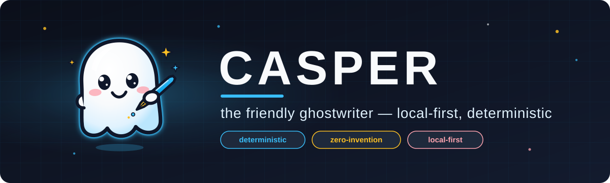

1. Fact Ingestion
Loads Markdown, HTML, LaTeX, DOCX, PDF, RTF, CSV, and YAML into deduplicated, salience-ranked facts (f001..) and a NetworkX DiGraph.
Casper turns unstructured engineering notes into audience-adapted, format-compliant drafts written in a named author's measured voice — across a Python library, CLI, and localhost Web UI.

Every surface (Python API, CLI, Localhost Web UI) routes through 10 uniform commands in commands.py with downward-only AST-verified imports.
Loads Markdown, HTML, LaTeX, DOCX, PDF, RTF, CSV, and YAML into deduplicated, salience-ranked facts (f001..) and a NetworkX DiGraph.
Maps facts into structure sections with depth caps (1/3/6), persona priority ordering, glossary substitution, and explicit ASK-only CTAs.
3-layer YAML profiles (generated, curated, mode-0600 local) scored across 32 features + 60 function words with tamper protection.
Deterministic RuleBasedRealizer by default (byte-identical) plus isolated opt-in claude & agy CLI writers with automatic fallback.
22 checks enforcing zero-invention traceability in STRICT mode and signed numbers, names, and per-fact polarity in ASSISTED mode.
Renders slack, email, memo, article (escaped HTML5), and plain without ever altering grounded wording, plus .trace.json provenance.
Search and filter all 10 uniform commands, CLI flags, HTTP endpoints, personas, structures, and modalities.
60 deterministic SVG, PNG, and ICO assets generated by scripts/build_brand.py — logos, 6 subsystem icons, die-cut vinyl stickers, ultrawide monitor wallpapers up to 3480×1440, and mobile phone wallpapers up to 1440×3120.
Zero cloud accounts, zero API tokens required. Runs 100% locally out of the box.
scripts/start.sh --background --open
# Opens http://127.0.0.1:8731/
scripts/stop.sh.venv/bin/casper write --author bill \
--source developer --target management \
--structure status_update --modality slack \
-i examples/edge-migration-status.md --seed 1.venv/bin/casper author build --id alex \
--name "Alex Rivera" samples/
.venv/bin/casper author score alex draft.mdscripts/verify.sh --quick # pre-commit
scripts/verify.sh # all 8 tiers + coverageEvery guide opens as a pre-rendered HTML page by default (zero JS required), with one-click Dynamic JS viewer, Raw Markdown view, and direct .md download.
CLI workflows, 3-layer author profiles, optional claude/agy writers, and start.sh/stop.sh operations.
Core dataclasses, 32 stability features, merge algebra, 10 personas, 3 structures, and 5 modalities.
10 uniform commands across Python casper.*, CLI --json, and hardened localhost HTTP endpoints.
8-tier test suite, offline socket guard, 9-mode fake CLI, golden regeneration, and coverage gates.
ADRs 0001–0012 documenting every architectural invariant and the exact test enforcing it.
Full contract-first SPEC.md compiled deterministically from spec/00-overview.md..05-brand-assets.md.